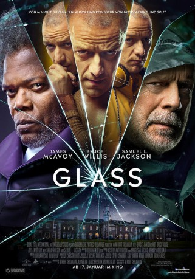

#11166 Glass
 
 IMDB-Wertung: 6.8 / 10
IMDB-Wertung: 6.8 / 10  Tomatometer: 37
Tomatometer: 37  Metascore: 42
Metascore: 42 
Kevin Wendell Crumb ist noch immer auf freiem Fuß und hochgefährlich. Der junge Mann, der mehrere Persönlichkeiten in sich vereint, hat schon einige Menschenleben auf dem Gewissen und die Gefahr besteht, dass es schon sehr bald mehr werden, denn in ihm schlummert die Bestie, die gefährlichste seiner Persönlichkeiten. Der unverwundbare David Dunn, der seit dem Krebstod seiner Frau gemeinsam mit Sohn Joseph eine Sicherheitsfirma betreibt, heftet sich deshalb an seine Fersen, um ihm das Handwerk zu legen. In einem Lagerhaus kommt es zum Showdown zwischen Crumb und Dunn, der jedoch von einer Spezialeinheit der Polizei unterbrochen wird. Nun müssen die beiden Männer die Psychiaterin Dr. Ellie Staple davon überzeugen, dass sie keine Superkräfte haben – ansonsten werden sie für immer weggesperrt. Mit ihnen ihm Raum sitzt ein weiterer Patient mit einem vermeintlichen Superheldenkomplex: Elijah Price alias Mr. Glass ...
Jahr: 2019
Dauer: 129 Minuten
FSK: 16
Land: USA Studio: Universal PicturesTonspuren: DTS - ,
Untertitel: Deutsch, Englisch,
Auflösung: 1080p (1920x808) Größe: 10065 MB
Genre: Thriller, Drama, Sci-Fi
Regisseur:  M. Night Shyamalan
M. Night Shyamalan
Drehbuch: M. Night Shyamalan
Soundtrack: West Dylan Thordson
Darsteller:
 James McAvoy als Patricia / Dennis / Hedwig / The Beast / Barry / Heinrich / Jade / Ian / Mary Reynolds / Norma / Jalin / Kat / B.T. / Kevin Wendell Crumb / Mr. Pritchard / Felida / Luke / Goddard / Samuel / Polly
James McAvoy als Patricia / Dennis / Hedwig / The Beast / Barry / Heinrich / Jade / Ian / Mary Reynolds / Norma / Jalin / Kat / B.T. / Kevin Wendell Crumb / Mr. Pritchard / Felida / Luke / Goddard / Samuel / Polly Bruce Willis als David Dunn
Bruce Willis als David Dunn Samuel L. Jackson als Elijah Price
Samuel L. Jackson als Elijah Price Anya Taylor-Joy als Casey Cooke
Anya Taylor-Joy als Casey Cooke Sarah Paulson als Dr. Ellie Staple
Sarah Paulson als Dr. Ellie Staple Spencer Treat Clark als Joseph Dunn
Spencer Treat Clark als Joseph Dunn- Charlayne Woodard als Mrs. Price
 Luke Kirby als Pierce
Luke Kirby als Pierce- Adam David Thompson als Daryl
 M. Night Shyamalan als Jai, Security Guard
M. Night Shyamalan als Jai, Security Guard- Shannon Destiny Ryan als Cheerleading Girl
- Diana Silvers als Cheerleading Girl
- Nina Wisner als Cheerleading Girl
- Kyli Zion als Cheerleading Girl
- Serge Didenko als Ronald, Powerful Young Man
- Russell Posner als T, Skinny Camera Kid
 Rosemary Howard als Penelope Crumb
Rosemary Howard als Penelope Crumb- Bryan McElroy als Clarence Crumb
 Leslie Stefanson als Woman on Train
Leslie Stefanson als Woman on Train- Bostin Christopher als Comic Book Counter Guy
 Ukee Washington als News Anchor
Ukee Washington als News Anchor Brian Anthony Wilson als Security Guard in Car
Brian Anthony Wilson als Security Guard in Car Tobias Segal als Surveillance Security Guard
Tobias Segal als Surveillance Security Guard- Joseph Thuet als Joe, Security Guard
- Tom DiNardo als Homeless Person
- Timothy Chivalette als Comic Book Geek
- Tim Duquette als Patient Jimmy
- Nathan Nauroth als Orderly Harrison
- Ana Leonard als Hospital Volunteer
- James M Adams als Restaurant Patron (uncredited)
- Scott Ahearn als French Man in Café (uncredited)
- Giuseppe Ardizzone als Riot Cop (uncredited)
- Tariq James Arthur als Factory Worker (uncredited)
 Gary Ayash als Businessman Professional in Train Station (uncredited)
Gary Ayash als Businessman Professional in Train Station (uncredited)- Matthew Bowerman als Bar Guy (uncredited)
- Jesse Bradley als Passerby (uncredited)
- Marisa Brown als Carol (uncredited)
- Jamaal Burcher als Hospital Orderly (uncredited)
- Devin Derrell Burton als Mental Hospital Patient (uncredited)
 Jennifer Butler als Factory Worker (uncredited)
Jennifer Butler als Factory Worker (uncredited)- Colin Campbell als High School Student (uncredited)
- Heather Capuano als Pedestrian (uncredited)
 Peter Chiamardas als Restaurant Patron (uncredited)
Peter Chiamardas als Restaurant Patron (uncredited)- David Collihan als Factory Worker (uncredited)
- John Crann als Factory Worker (uncredited)
- Jason Cutts als High School Teacher (uncredited)
- Matthew Daisher als Pedestrian (uncredited)
- Michael Daisher als Pedestrian (uncredited)
 Brian Donahue als Security Guard (uncredited)
Brian Donahue als Security Guard (uncredited)- Kevin Paul Fischer als Police Officer (uncredited)
Datei: X:\3-Trilogie(A-F)\Eastrail 177 Universe\Glass (2019, FSK16, 1920x808).mkv seit 01.05.2019
Festplatte: HD Collection-2(A-Z)-3(A-M)
 Alle Filme aus Gruppe '3-Trilogie(A-F)\Eastrail 177 Universe'
Alle Filme aus Gruppe '3-Trilogie(A-F)\Eastrail 177 Universe'